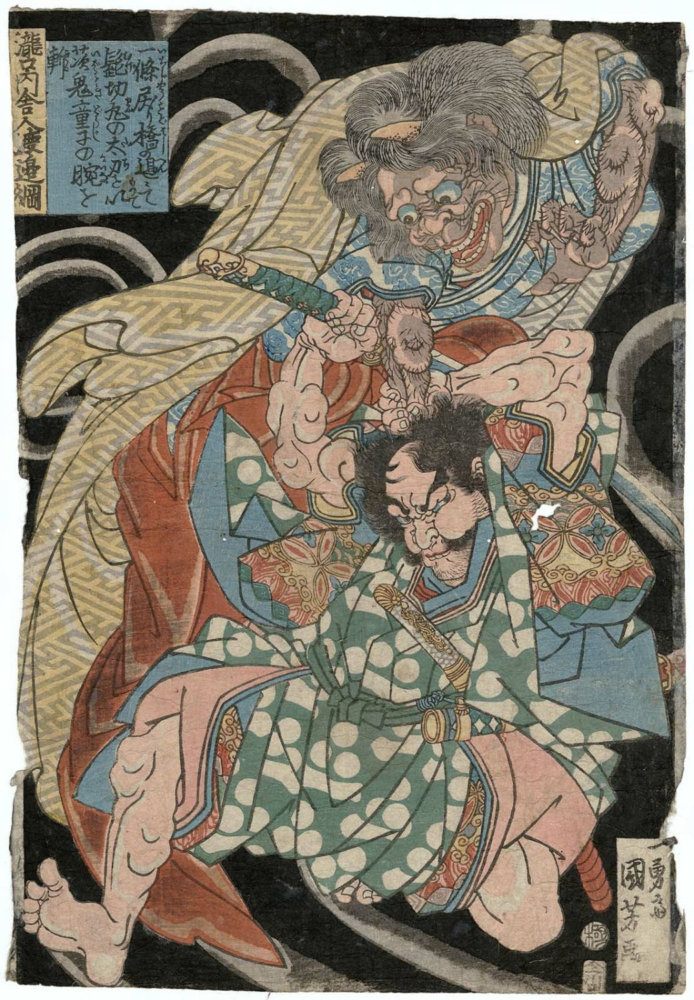

Oni
Oni are the the demons and devils of Japanese art. They are typically depicted as being largely humanoid minus their claws, fangs, horns, and often vibrantly colored skin. Oni are frequently illustrated as wearing loin cloths and wielding weapons such as katanas and kanabō — massive, studded clubs. These little demons are the harbingers of disaster, disease, and other things that plague humanity.